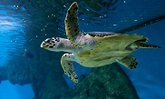
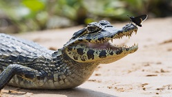
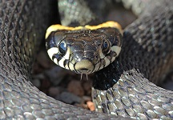
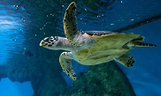
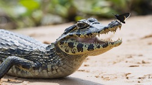
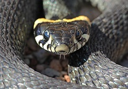

Вид
Пресмыкающиеся
Пресмыкающиеся-это вид преимущественно холоднокровных наземных позвоночных животных. В большинстве своём к ним относят черепах,крокодилов и рептилий.
  
Пресмыкающиеся-это вид преимущественно холоднокровных наземных позвоночных животных. В большинстве своём к ним относят черепах,крокодилов и рептилий.
  